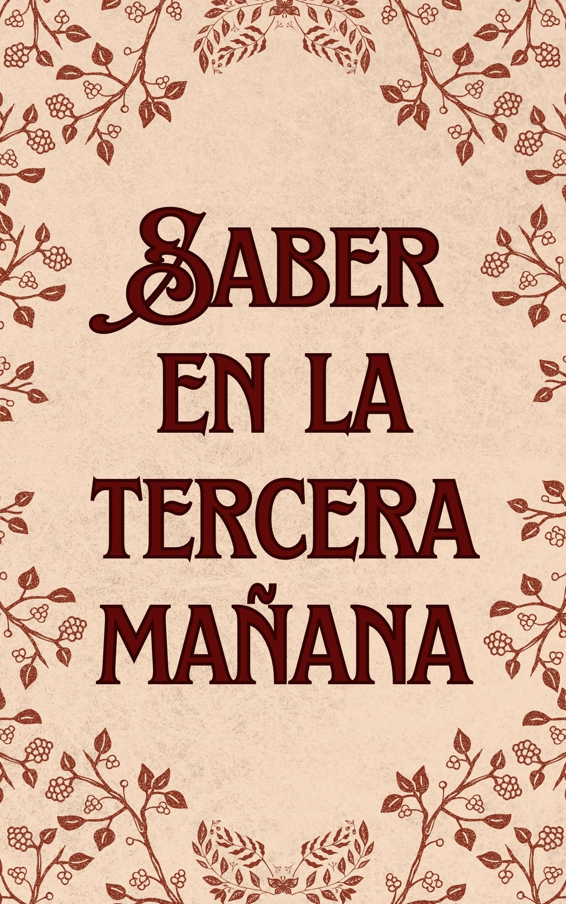

Dee, quien reencarnó en el mundo del juego al que era adicto en su vida anterior, se satisfizo con solo mirar al Capitán Leonardo, quien era su favorito, desde la distancia como miembro. Un día, fue elegido como nueva unidad y decidió ser transferido de la unidad de Leonardo. A la mañana siguiente, cuando Dee estaba borracho con una bebida que se llevó a cabo como una celebración de promoción, Dee se despertó y vio a Leonardo frente a él. O más bien, había algo de Leonardo en eso. *Esta es una historia erótica.